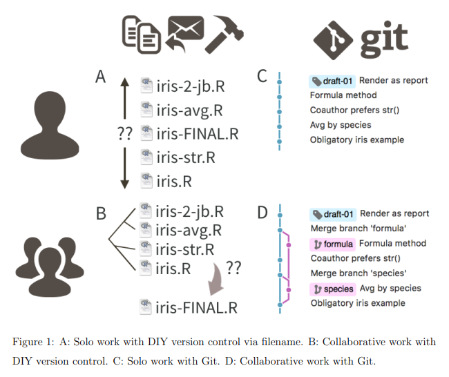

Collaborative coding with github
Introduction
Jennifer Bryan has written an excellent paper (Bryan 2017) on the use of git and GitHub when working with R.
Jennifer is also co-author on the web-book “Happy Git and GitHub for the useR” which is an excellent resource whenever you are stuck.
What is git?
Git is a version control system. It keeps track of changes made to files contained in a repository. Additionally, using GitHub users can collaborate on a repository by keeping an online version of the repository.
The benefits of using git comes from enabling collaboration with other and your future you (Bryan 2017).
Different alternatives for version control

Basic git and GitHub
Create new repositories online on github, this will be an empty repository
Clone the repository in your R project (New Project > Version Control > Git)
Make changes, add files etc.
git add filefor a specific file orgit add -Afor all changed filesgit commit -m "message"commit changes to the version control system with a message describing what you have done.git pushto the remote repository (GitHub)If collaborating, a collaborator may
git pullall changes to their local repository.Check if you have any changes that needs to be commited or pulled by
git status
Using forks and pull requests
- A fork is a copy of a repository that may evolve independently to the original repository under your own username on github.
- Create a fork from the GitHub web interface (www.github.com).
- After you have made changes you may file a pull request to the original repository. You will have to describe the changes and why you think the maintainer should accept pulling your changes into the original repository.
- This is a great way to suggest changes to complex projects.
Using branches
- Similarly to forks, a branch can also be used to update a repository with changes which are then merged to the main branch after testing or review.
- See the GitHub documentation for details.